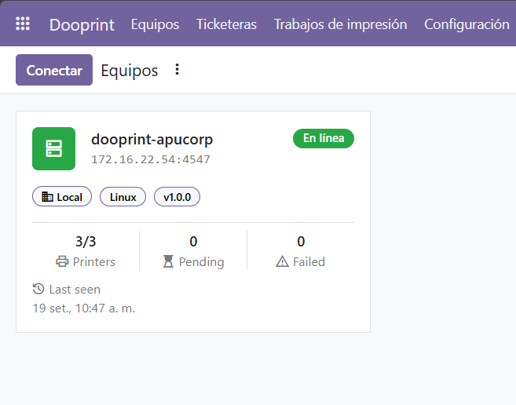
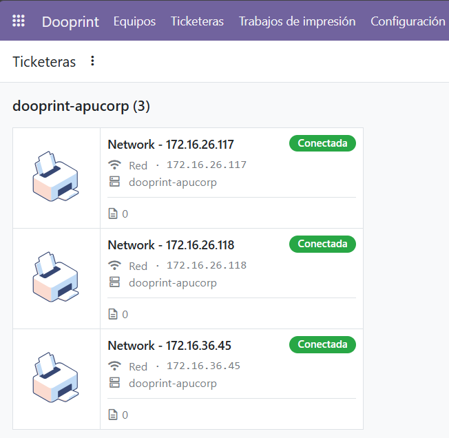

Dooprint
Print from Odoo on the printers of a shop, a warehouse or a clinic, even when Odoo runs on a remote server and nobody has a browser open.
|
Josue Salazar LinkedIn · GitHub |
|
API SERVICE SAC apiservicesac.com |
The problem it solves
Printing a receipt is one of the simplest things an ERP does. It stops being simple when the server is in the cloud and the printer is in the shop: the usual answers are opening ports, building tunnels, or leaving a browser open on a computer so a piece of paper comes out.
Dooprint puts a small print service on a computer next to the printers. Odoo queues the job, the service prints it and reports back. No open ports, no tunnels, no browser required.
How a job reaches the printer
| Mode | When to use it | How it works |
|---|---|---|
| Agent | Odoo runs outside the printer network, on a cloud server or a VPS. | The device keeps a connection to Odoo open. When a job is queued, Odoo wakes it up and the device picks it up right away. |
| Local | Odoo runs on the same network as the printers. | Odoo sends each job straight to the device. |
What you get
- Pairing with a one-time token. The device registers itself and reports the USB and network printers it finds, so nobody types identifiers by hand.
- A job queue you can see. Every ticket has a state, a printer and an error message when something goes wrong.
- Jobs are never printed twice. They are taken with a database lock, so two Odoo workers never hand the same ticket to the device.
- Device status at a glance. A paired device reports every 30 seconds and shows as offline after two minutes of silence. Opening its form pings it.
- Remote HTTP requests. A device can reach equipment on its own network that Odoo cannot see, and return the answer to Odoo.
For developers
This module prints nothing on its own: other modules queue their jobs through it and get the result back.
job = self.env['dooprint.job']._enqueue(printer, payload, origin=record)
The payload is an ePOS-Print request, or ZPL for label printers. A QWeb template can be turned into a printable image, so a ticket looks the same on any printer regardless of its code page:
payload = self.env['dooprint.render'].epos_from_template('my_module.ticket', values)
When the origin record defines _dooprint_job_done(job), it is called every time
the job changes state.
What it looks like
A paired device, with the printers it found and the state of its queue.

Every printer the device reports, ready to be used from any module.

Getting started
- Install this module.
- Install the dooprint service on a computer next to the printers.
- Open Dooprint › Devices, click Connect and paste the token into the device.
- The device reports its printers. Send a test page from any of them.
Requires Odoo 19. The print service runs on Windows and Linux.
Support

Written and maintained by Josue Salazar
(LinkedIn · GitHub)
and API SERVICE S.A.C.
Questions and bug reports: info@apiservicesac.com
Licensed under AGPL-3.